A selected drawing: before and after
| Item | Before | After |
|---|---|---|
| Selected look | 1 px bolder only | round handles on the anchors + a bar over the chart |
| Settings | none | colour (theme swatches + custom), width 1-4, solid / dashed / dotted, extend (trend line, channel), label text |
| Delete | Delete key only (none on a phone) | trash on the bar, no question (Undo brings it back) |
| Lock / copy | - | lock / unlock, duplicate |
| Desktop place | - | top right, clear of the price axis; steps below the top-left row (live chip, legend, Open / High / Low / Close readout) when that row reaches under it, so both stay visible |
| Phone | - | docked above the chart's bottom controls, 44 px buttons, all in view at 390 |
| Where | - | every v2 chart: Charts page, Multi-chart cells, the Terminal's chart |
Charts page
Desktop 1440 - light
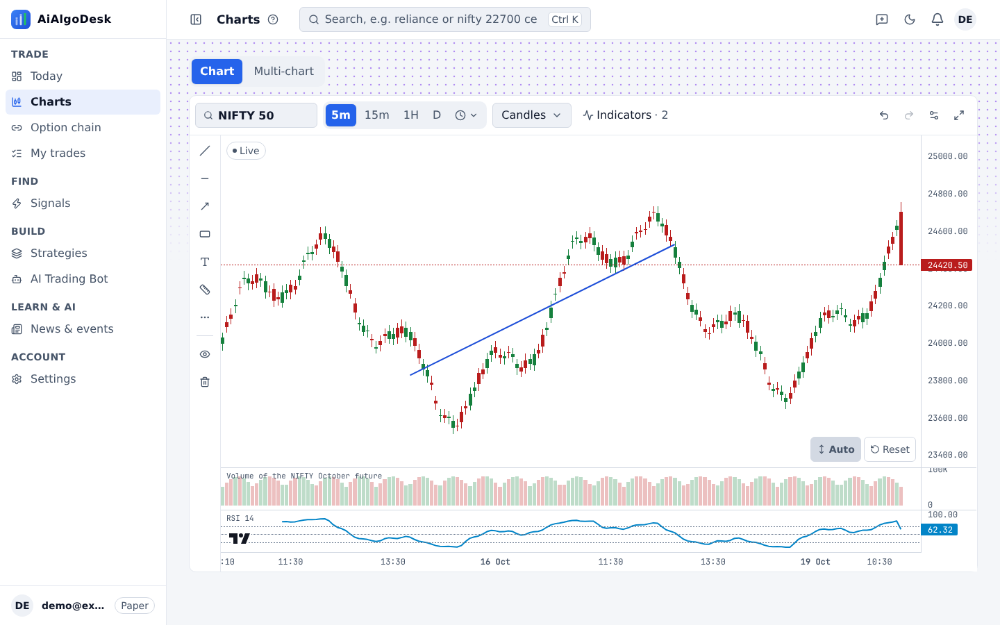
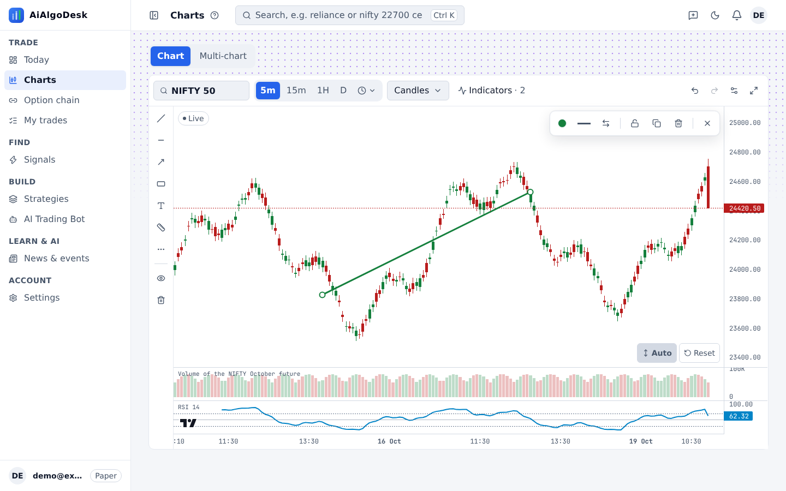
Desktop 1440 - dark
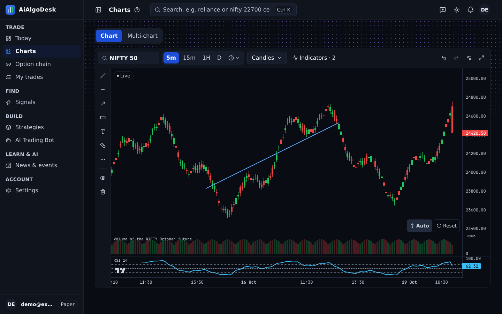
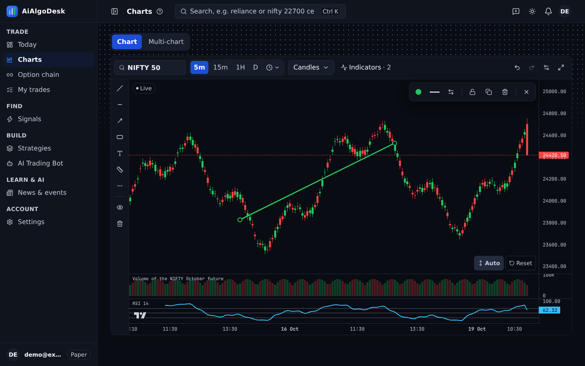
Phone 390 - light
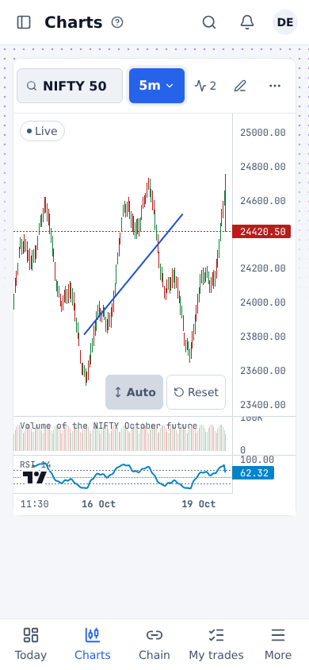
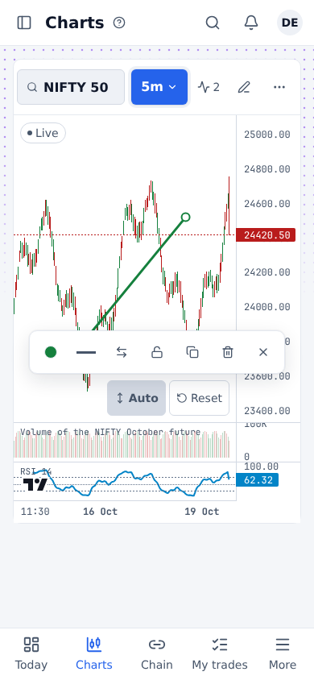
Phone 390 - dark
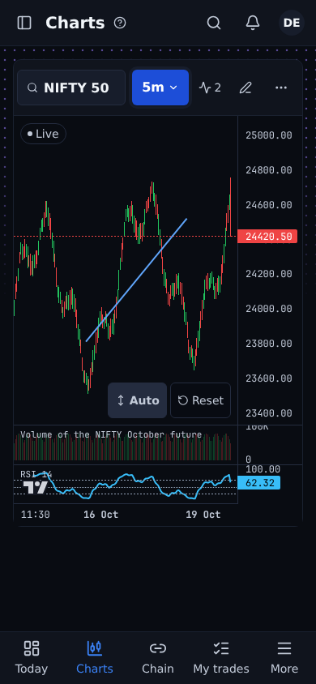
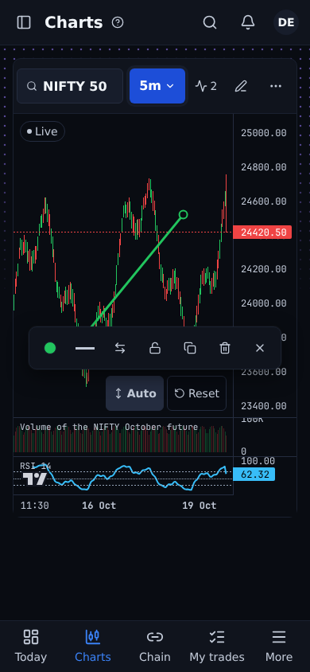
Terminal chart panel
Terminal 1440 - light
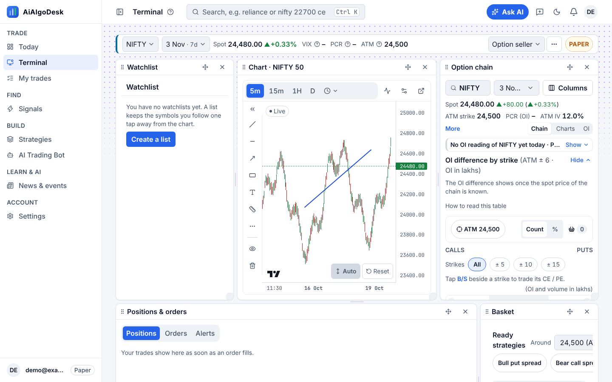
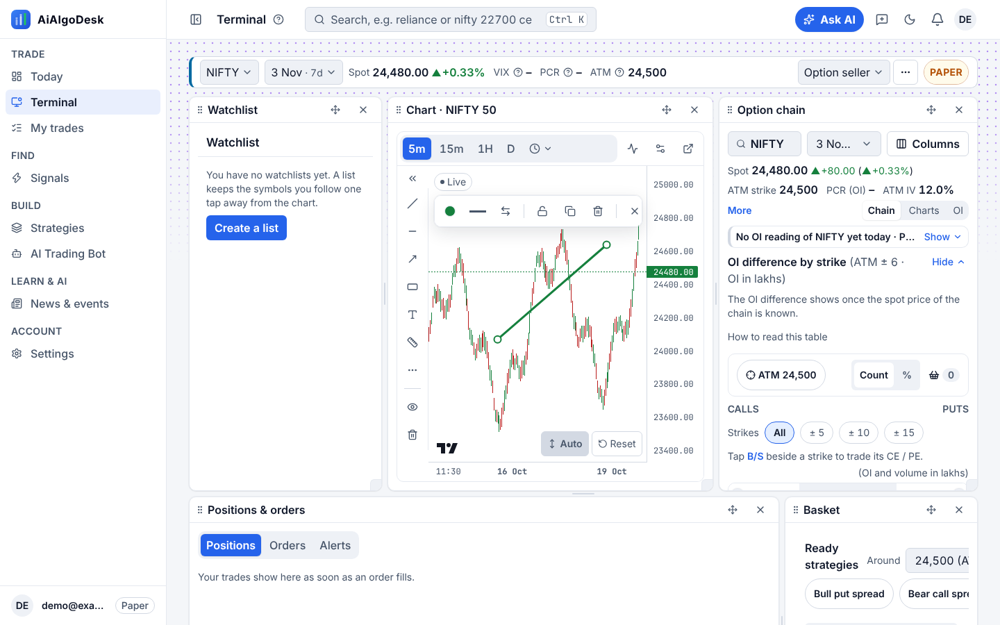
Terminal 1440 - dark
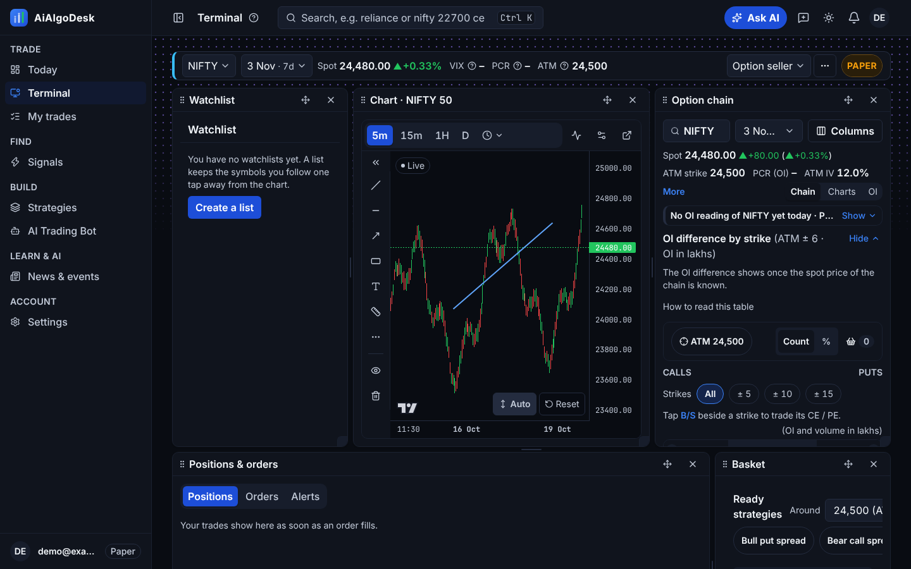
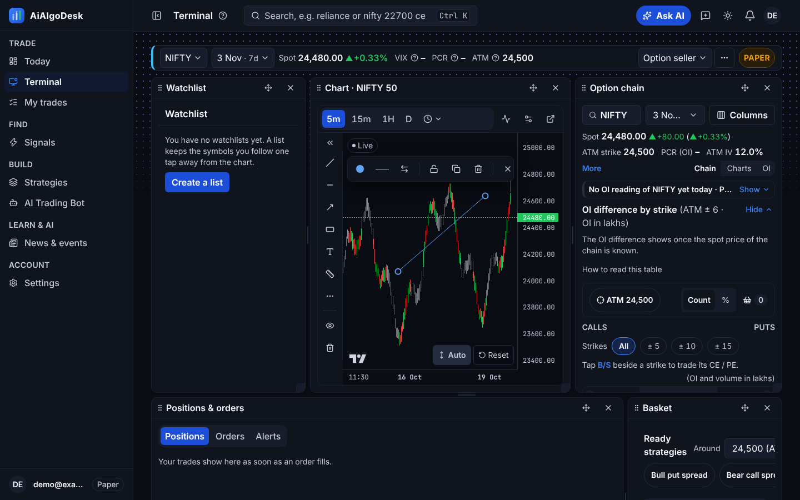
Terminal 390 - light
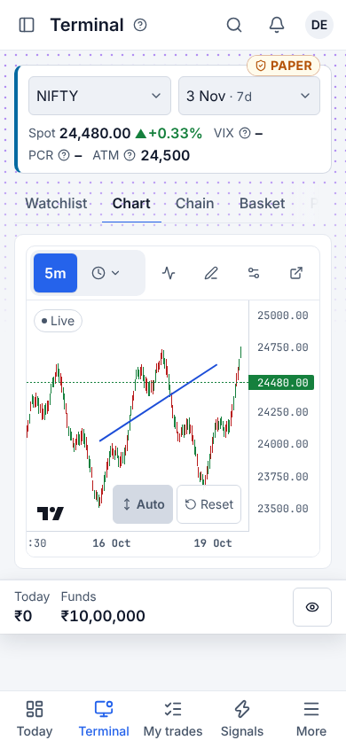
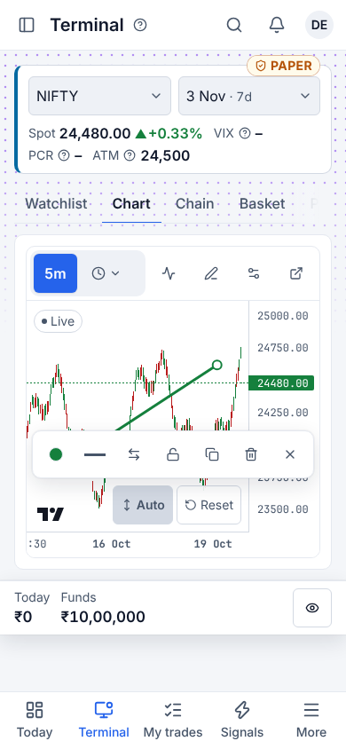
Terminal 390 - dark
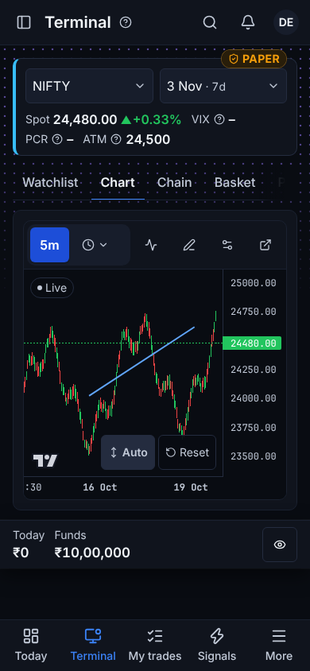
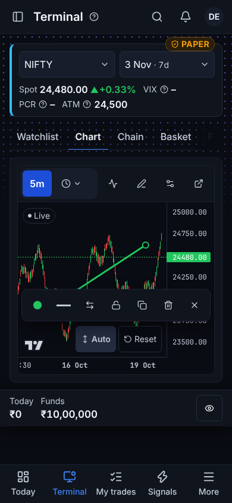